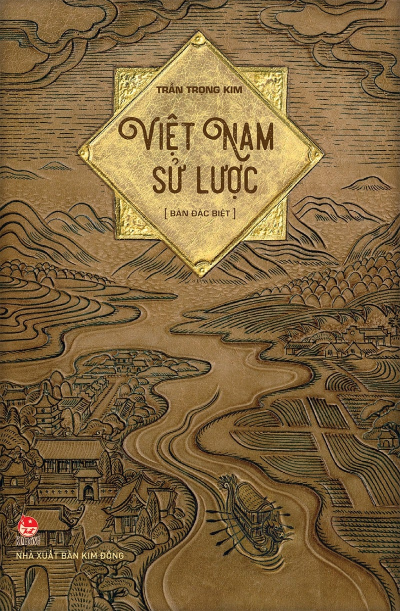

Trang 30
Text book

VIỆT NAM SỬ LƯỢC
“Sử là sách không những là chỉ để ghi chép những công việc đã qua mà thôi, nhưng lại phải suy xét việc gốc ngọn, tìm tòi cái căn nguyên những công việc của người ta đã làm để hiểu cho rõ những vận hội trị loạn của một nước, những trình độ tiến hóa của một dân tộc. Chủ đích là để làm cái gương chung cổ cho người cả nước được đời đời soi vào đấy mà biết cái sự sinh hoạt của người trước đã phải lao tâm lao lực những thế nào, mới chiếm giữ được cái địa vị ở dưới bóng mặt trời này…
… Nay nhân sự học ở nước ta đã thay đổi, chữ quốc ngữ đã phổ thông cả trong nước, chi bằng ta lấy tiếng nước nhà mà kể chuyện nước nhà, ta soạn ra bộ “Việt Nam sử lược”, xếp đặt theo thứ tự, chia ra từng thời đại, đặt thành chương, thành mục rõ ràng, để ai cũng có thể xem được sử, ai ai cũng có thể hiểu được chuyện, khiến cho sự học sử của người mình được tiện lợi hơn trước.”
(Trần Trọng Kim - Việt Nam sử lược)
Evaluate


4 sao
3 sao
2 sao
Evaluate
Từ khi Dương Tam Kha tiếm vị, các thổ hào như Trần Lãm, Kiểu
Công Hãn và những người khác đều tự xưng là Sứ quân và trở nên
độc lập. Sau đó, Nam Tấn Vương đã khôi phục lại vương triều,
nhưng các Sứ quân vẫn không chịu thần phục. Vì thế, nhà vua
phải liên tục tiến hành các cuộc chinh phạt, nhưng tình hình
vẫn không yên ổn. Khi Nam Tấn Vương bị giặc bắn chết, con trai
của Thiên Sách Vương là Ngô Xương Xí lên kế vị, nhưng thế lực
nhà vua lúc đó đã suy yếu, không ai phục tùng nữa. Ngô Xương
Xí lui về giữ đất Bình Ki. Tướng nhà Ngô là Đỗ Cảnh Thạc cũng
chiếm một vùng và tự xưng là Sứ quân.
Submit your reply